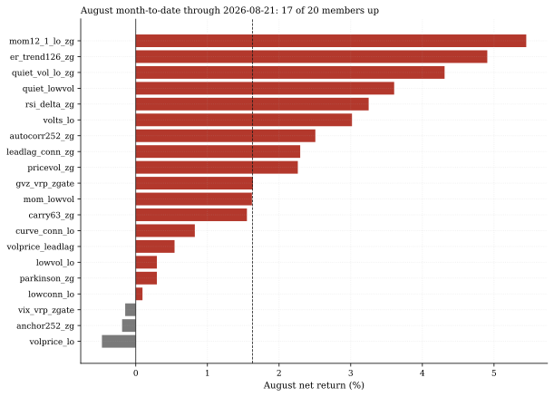
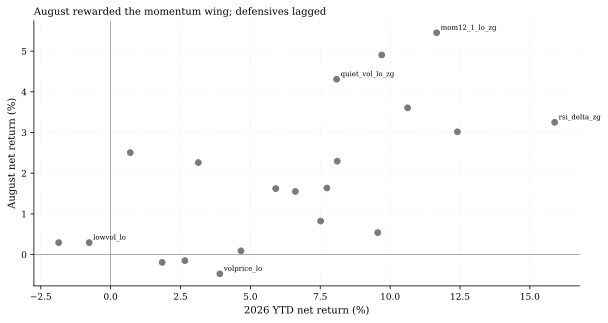
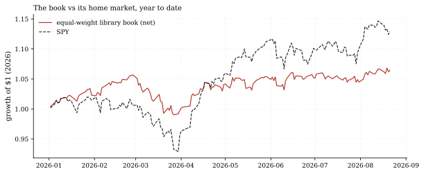

The one-paragraph version. With the panel refreshed through Friday 2026-08-21, we re-ran every one of the library's 20 equity members through the same engine that certified them and graded the month: 17 of 20 are up in August with a +1.63% median net return, led by 12-1 momentum at +5.45% while the pure low-vol defensive managed +0.29% - and the worst member is down only -0.47%. The honest counterweight: this is a tape that set records into mid-August (SPY +2.50% in August, +12.89% year-to-date), and a library built for drawdown discipline trails it - the equal-weight book is +6.45% YTD, 5.70% behind SPY on a relative basis, at a YTD Sharpe of 1.14.
How we worked this problem
The certification-time member streams end 2026-08-14; rather than quote a stale artifact, this note re-runs all 20 member specs (from data/loop/library/library_specs.json) through the funnel engine at T1 frictions, monthly re-formation, on the refreshed panel through Friday 2026-08-21 - the identical construction that certified them, carried five sessions forward. We then aggregated: August month-to-date and YTD net returns per member (compounded, matching the growth-of-$1 curves in the figures), the equal-weight book against SPY, and the sector cross-section behind the month's story. The three crypto members and the top-tier member are outside this scoreboard (different books and friction schedules); this is the 20-member equity library.
The data audit
| Source | Coverage | As-of | Role |
|---|---|---|---|
data/cache_panel_2007_2026.parquet | 16 ETFs, daily OHLCV | 2026-08-21 | the library book (all member re-runs) |
data/loop/library/library_specs.json | 20 member specs | generated 2026-08-21 | the exact certified constructions |
data/cache_sector_2007_2026.parquet | 12 tickers, daily OHLCV | 2026-08-21 | August sector cross-check |
All member metrics are computed by this note's script via the engine - nothing is quoted from certification-time JSONs. The funding cache is not used (equity-only scoreboard).
The external read
The month's sector story is visible outside our walls too: Bloomberg's sector tape for Friday August 21 showed health care among the day's leaders (+1.32%) and utilities among the laggards (-2.31%) (Bloomberg markets/sectors). Our own August month-to-date agrees on direction and adds magnitude: XLV +7.43% and XLU -3.56% through Friday. Mid-year sector reviews (Alaric Securities) frame the same dispersion across 2026's sectors.
Exhibits
Exhibit 1 - the scoreboard. 17 of 20 members positive in August, median +1.63%, spread 5.92 points from best to worst: mom12_1_lo_zg +5.45% at the top, volprice_lo -0.47% at the bottom. No member is down more than half a point in a month when the home market added 2.50% - the battery's risk ceilings show up as a tight downside band.

Exhibit 2 - August rewarded the momentum wing. Plotting August against YTD: the book's momentum and trend members (mom12_1_lo_zg +5.45% Aug / +11.66% YTD, er_trend126_zg +4.91% / +9.70%) sit top-right; the pure defensives cluster left (lowvol_lo +0.29% Aug / -0.77% YTD). The YTD leader overall is rsi_delta_zg at +15.89%; the YTD laggard is parkinson_zg at -1.86%. This is what "defensive library in a record tape" means month after month: the members designed to survive drawdowns give up ground in melt-ups.

Exhibit 3 - the book vs its home market. The equal-weight 20-member book is +6.45% YTD against SPY's +12.89% - a -5.70% relative gap - at a YTD Sharpe of 1.14; SPY itself sits 1.56% below its mid-August record high. August was a good month for the book (+1.88% mean, +2.50% for SPY): the gap was mostly made earlier in the year when the tape ran without pullbacks.

So what - opportunities
- The scoreboard is the product. Twenty certified constructions, one
- **August's internal spread (5.92 points) is the diversification
- A melt-up is a stress test of a different kind. A defensive
engine, one tape: a reader can check any member's August against the reproduce command below. The next telemetry issue grades September the same way.
working.** The wings take turns; the book's job is that no single wing's bad month becomes the book's bad month.
library's hardest environment is a relentless rally; surviving it 17 of 20 positive is the honest way to earn the right to claim protection in the next drawdown.
So what - risks
- **Trailing a record-setting tape is a real commercial risk, not a
- Five sessions of carry-forward: the re-run extends certification
- Two members negative YTD (
parkinson_zg-1.86%,lowvol_lo-0.77%)
technicality:** -5.70% relative YTD against SPY is the cost of the design; if the tape keeps running without drawdowns, that gap widens.
streams by five sessions; monthly re-formation means most members did not trade in the window - August's numbers are position carry, not fresh signals.
remind that library-certified is not guaranteed-positive over any horizon; the battery admits strategies on full-sample risk-adjusted grounds.
Machinery: how this piece was produced
articles/2026-08-23-library-august-scoreboard/analysis.py loads the 20 member specs, re-runs each through run_tier (T1 frictions, monthly) on the refreshed panel, computes every number above into assets/numbers.json (all period returns compounded, matching the plotted growth-of-$1 curves), and renders the three figures (SVG + PNG twins).
Reproduce with: ``bash .venv/Scripts/python articles/2026-08-23-library-august-scoreboard/analysis.py ``
Limitations
- August month-to-date is measured through Friday 2026-08-21 (the panel's
- The scoreboard covers the 20 equity members only; crypto members and the
- Net returns are T1 ($100k) frictions per the
- Equal-weight book aggregation is a simple mean of member net streams -
last validated session); the month is not over.
top-tier member run different books and friction schedules.
quantlab/backtest/frictions.py schedule; a different tier scales costs differently.
not an optimized allocation, and not a live track record (the live ledger is separate and younger).
Sources - external reading list
| Claim | Source |
|---|---|
| Aug-21 daily sector tape: health care +1.32% (leader), utilities -2.31% (laggard) - direction confirmed by our August MTD (XLV +7.43%, XLU -3.56%) | Bloomberg - Markets/Sectors |
| 2026 mid-year sector dispersion context | Alaric Securities - S&P 500 Sector Performance |
quantlab-loop-engine; battery-metrics; yfinance; matplotlib